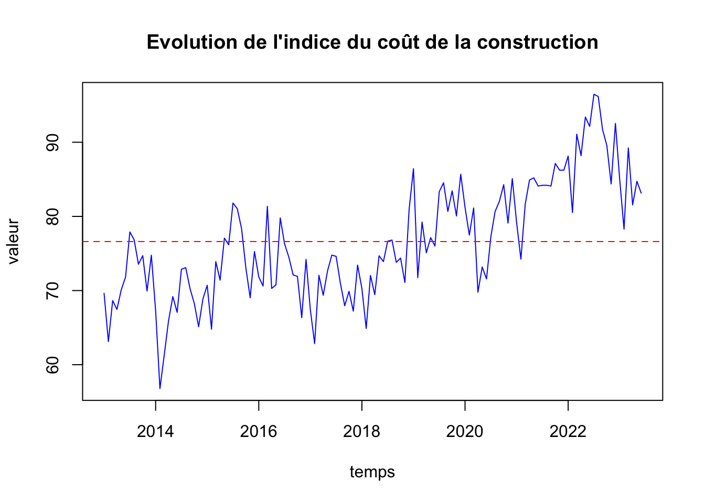
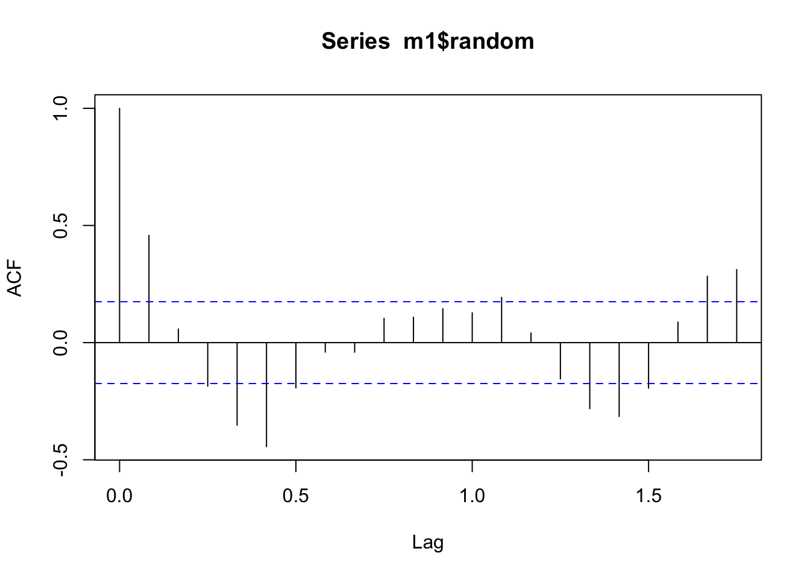
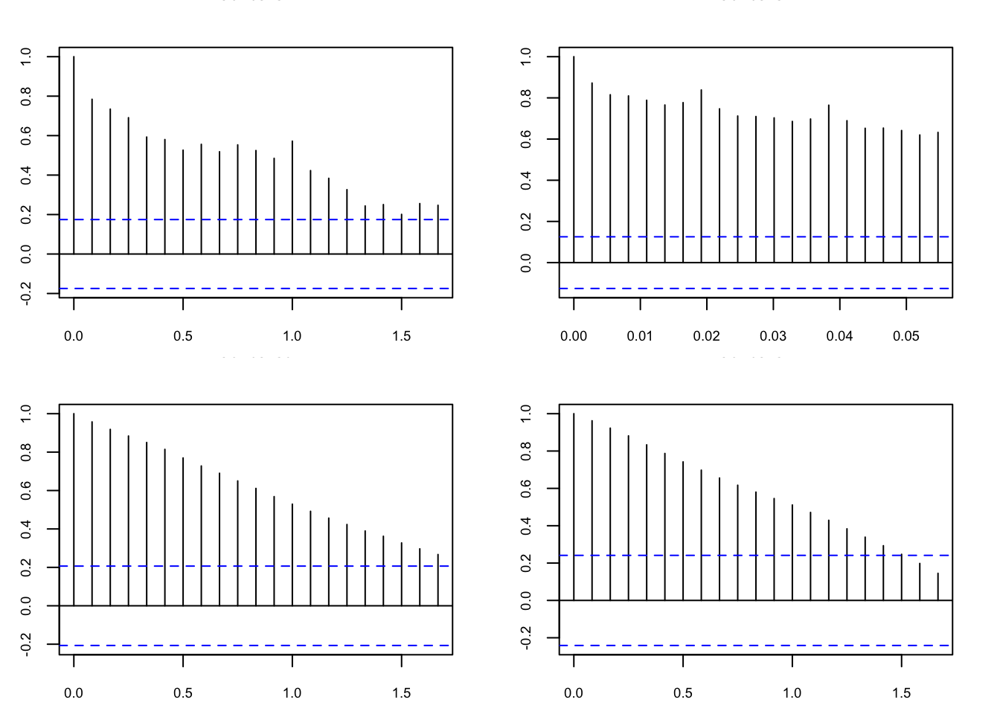
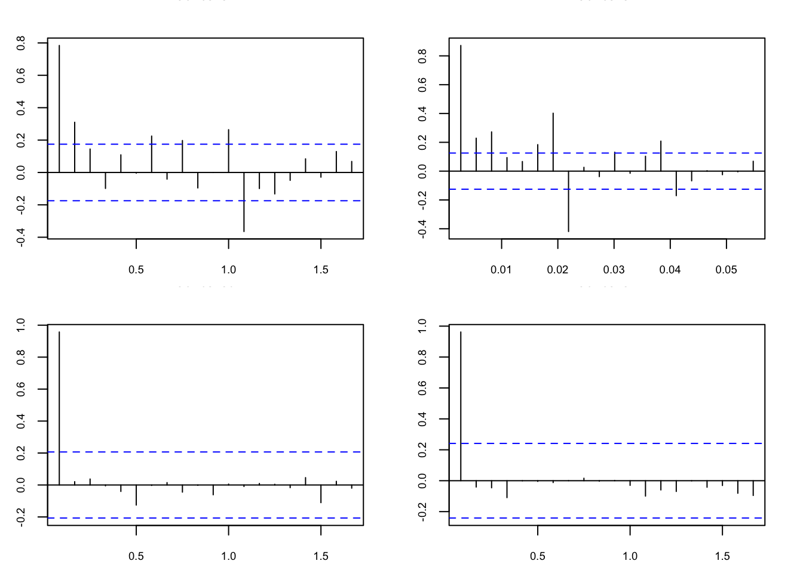

Chapitre 3 Modélisation
3.1 Stationnarité
3.1.2 Graph
La série est‐elle stationnaire?
plot(s1, xlab = "temps", ylab = "valeur", col = "blue",
main = "Evolution de l'indice du coût de la construction")
abline(h = mean(s1), col = "red", lty = 2)
On voit clairement sur le chronogramme de la série qu’elle ne pourrait pas être stationnaire : sa moyenne depend de l’instant auquel on se trouve et le niveau de la série ne fluctue pas autour d’une valeur quelconque.
3.1.3 Test de
Test de stationnarité
##
## Attaching package: 'aTSA'## The following objects are masked from 'package:tseries':
##
## adf.test, kpss.test, pp.test## The following object is masked from 'package:graphics':
##
## identify## Augmented Dickey-Fuller Test
## alternative: stationary
##
## Type 1: no drift no trend
## lag ADF p.value
## [1,] 0 -0.132 0.605
## [2,] 1 0.256 0.716
## [3,] 2 0.339 0.740
## [4,] 3 0.301 0.729
## [5,] 4 0.330 0.737
## Type 2: with drift no trend
## lag ADF p.value
## [1,] 0 -3.82 0.010
## [2,] 1 -2.66 0.089
## [3,] 2 -2.17 0.262
## [4,] 3 -2.30 0.214
## [5,] 4 -1.98 0.338
## Type 3: with drift and trend
## lag ADF p.value
## [1,] 0 -6.27 0.0100
## [2,] 1 -4.24 0.0100
## [3,] 2 -3.61 0.0354
## [4,] 3 -3.96 0.0138
## [5,] 4 -3.63 0.0332
## ----
## Note: in fact, p.value = 0.01 means p.value <= 0.01## Augmented Dickey-Fuller Test
## alternative: stationary
##
## Type 1: no drift no trend
## lag ADF p.value
## [1,] 0 -0.0801 0.621
## [2,] 1 0.1562 0.689
## [3,] 2 0.3774 0.752
## [4,] 3 0.6151 0.821
## [5,] 4 0.6733 0.838
## Type 2: with drift no trend
## lag ADF p.value
## [1,] 0 -3.99 0.0100
## [2,] 1 -3.06 0.0327
## [3,] 2 -2.34 0.1940
## [4,] 3 -2.27 0.2209
## [5,] 4 -2.04 0.3109
## Type 3: with drift and trend
## lag ADF p.value
## [1,] 0 -7.78 0.0100
## [2,] 1 -6.15 0.0100
## [3,] 2 -4.58 0.0100
## [4,] 3 -4.01 0.0100
## [5,] 4 -3.64 0.0295
## ----
## Note: in fact, p.value = 0.01 means p.value <= 0.01## Augmented Dickey-Fuller Test
## alternative: stationary
##
## Type 1: no drift no trend
## lag ADF p.value
## [1,] 0 5.41 0.99
## [2,] 1 6.72 0.99
## [3,] 2 6.28 0.99
## [4,] 3 5.70 0.99
## Type 2: with drift no trend
## lag ADF p.value
## [1,] 0 3.25 0.99
## [2,] 1 4.54 0.99
## [3,] 2 4.76 0.99
## [4,] 3 4.75 0.99
## Type 3: with drift and trend
## lag ADF p.value
## [1,] 0 -0.271 0.99
## [2,] 1 0.257 0.99
## [3,] 2 0.397 0.99
## [4,] 3 0.481 0.99
## ----
## Note: in fact, p.value = 0.01 means p.value <= 0.01## Augmented Dickey-Fuller Test
## alternative: stationary
##
## Type 1: no drift no trend
## lag ADF p.value
## [1,] 0 3.03 0.990
## [2,] 1 2.08 0.990
## [3,] 2 1.62 0.972
## [4,] 3 3.25 0.990
## Type 2: with drift no trend
## lag ADF p.value
## [1,] 0 1.368 0.990
## [2,] 1 0.827 0.990
## [3,] 2 0.518 0.985
## [4,] 3 -0.113 0.941
## Type 3: with drift and trend
## lag ADF p.value
## [1,] 0 -2.98 0.1742
## [2,] 1 -3.60 0.0403
## [3,] 2 -4.61 0.0100
## [4,] 3 -1.81 0.6464
## ----
## Note: in fact, p.value = 0.01 means p.value <= 0.01Au seul de 5%, on observe par le résultat du test de Dickey-Fuller augmenté que cette série n’est pas stationnaire.
## Loading required package: zoo##
## Attaching package: 'zoo'## The following objects are masked from 'package:base':
##
## as.Date, as.Date.numeric
## Retard p-value
## [1,] 3 0
## [2,] 6 0
## [3,] 9 0
## [4,] 12 0Du résultat ci-dessus, la p-value > 0,05 indiquant que la distribution des données n’est pas significativement différente de la distribution normale. En d’autres termes, nous pouvons supposer que la normalité.
fonction d’auto-corrélation
par(mfrow = c(2,2), oma = c(0, 0, 0, 0), mar = c(2.5, 2.5, 2,2), cex.main = 0.8, cex.lab = 0.7, cex.axis = 0.7)
acf(s1, lag.max = 20)
acf(s2, lag.max = 20)
acf(s3, lag.max = 20)
acf(s4, lag.max = 20)
par(mfrow = c(2,2), oma = c(0, 0, 0, 0), mar = c(2.5, 2.5, 2,2), cex.main = 0.8, cex.lab = 0.7, cex.axis = 0.7)
pacf(s1, lag.max = 20)
pacf(s2, lag.max = 20)
pacf(s3, lag.max = 20)
pacf(s4, lag.max = 20)